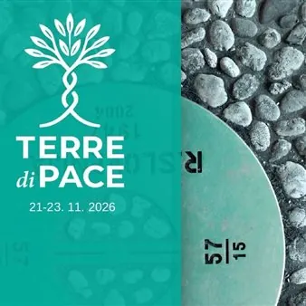

da sab 21 nov a lun 23 nov
Terre di Pace
La pace si costruisce ogni giorno, nelle relazioni tra le persone, nelle parole che scegliamo, nel modo in cui affrontiamo chi la pensa diversamente da noi: questo il presupposto del laboratorio interreligioso Terre di Pace, che nella sua seconda edizione porterà a Gorizia da…
 Indicazioni
Indicazioni
- Costi e prenotazioni
- Costo non indicato · Prenotazione non indicata
- Programma
- Programma da verificare. Apri la fonte ufficiale per orari e possibili aggiornamenti.
- In caso di maltempo
- Nessuna indicazione specifica pubblicata.
- Note
- Acquisito automaticamente dalla fonte.
L’EVENTO
Descrizione completa
La pace si costruisce ogni giorno, nelle relazioni tra le persone, nelle parole che scegliamo, nel modo in cui affrontiamo chi la pensa diversamente da noi: questo il presupposto del laboratorio interreligioso Terre di Pace, che nella sua seconda edizione porterà a Gorizia da sabato 21 a lunedì 23 novembre incontri, provocazioni e iniziative per una nuova rivoluzione culturale.
Un messaggio forte, che parte da Gorizia, città simbolo del superamento delle divisioni e protagonista, insieme a Nova Gorica, dell'esperienza di GO!2025 Capitale europea della cultura che vuole contribuire a cambiare il modo di comunicare e di stare insieme, soprattutto in un tempo in cui la contrapposizione, l’aggressività verbale e il linguaggio violento sembrano trovare sui social terreno sempre più fertile.
Programma:
sabato 21 novembre
ore 10.00 – “Nella storia della Gorizia religiosa”
passeggiata storica con Vanni Feresin – prenotazioni: vanniferesin@yahoo.it
Ritrovo in Piazza San Rocco (Obelisco)
Prenotazioni: vanniferesin@yahoo.it
ore 11.20 – Giardini pubblici, Corso Verdi
“Parla con gli sconosciuti” - inaugurazione
ore 20.00 – Auditorium della Cultura Friulana, via Roma 5
Apertura ufficiale del Festival
ore 20.30 – Auditorium della Cultura Friulana, via Roma 5
“Dalle guerre di religione alle sfide della pace” - Conferenza con Federico Fubini
domenica 22 novembre
ore 15.00 – Ritrovo in Piazza S. Ilario
“Le contrapposizione religiose nel Goriziano”
ore 16.30 – Auditorium della Cultura Friulana, via Roma 5
“Dio ha bisogno di un tempio? Le religioni fra la gente” - Incontro interreligioso
ore 18.30 – Auditorium della Cultura Friulana, via Roma 5
“Le religioni: strumento di conflitto o di pacificazione?” - Forum interreligioso
lunedì 23 novembre
dalle ore 9.00 – Auditorium della Cultura Friulana, via Roma 5
“La mia fede, la tua fede, il nostro futuro” - dialogo tra giovani
Laboratori di giovani per la pace (Laboratori scuole – ISIG)
ore 10.00 – Auditorium della Cultura Friulana, via Roma 5
“Il libro delle ombre, Hiroshima 80 anni dopo” – documentario
ore 11.30 – Piazza Vittoria
“La rivoluzione della pace – in piazza per cambiare il mondo” – azione pubblica
ore 18.00 – Sala Dora Bassi, via Garibaldi 7
“L’Europa plurale per una convivenza civile e democratica” – con Saul Meghnagi
Tutti gli eventi saranno a ingresso libero
IL PROGRAMMA
Programma e orari
Appuntamenti raccolti dalle fonti elencate. Dove manca un orario, non è ancora disponibile in questa scheda.
Programma pubblicato
- ore 10.00 – “Nella storia della Gorizia religiosa”
- ore 11.20
- ore 20.00
- ore 20.30
- ore 15.00
- ore 16.30 –
- ore 18.30 –
- ore 9.00
- ore 10.00 –
- ore 11.30
- ore 18.00
INFORMAZIONI UTILI
Prima di partire
- Controllare la fonte prima di partire.
ORGANIZZAZIONE